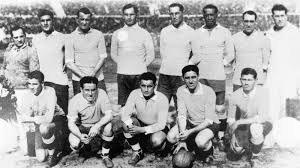
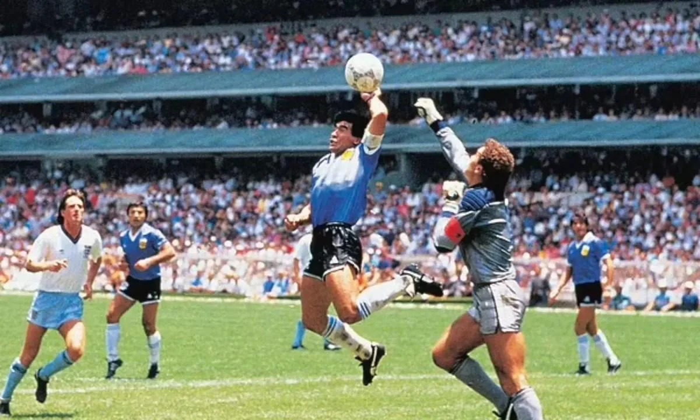
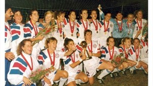

The Origins of Soccer:
Soccer traces its origins back thousands of years. One of the earliest known forms of the game was Tsu’ Chu, played in ancient China around 2,000 years ago, where players used their feet to kick a leather ball into a net. Similar games were also played in ancient civilizations like Greece, Rome, and parts of Central America. However, the modern version of soccer began to take shape in medieval England, where large, chaotic matches were played between neighboring villages with few rules and lots of enthusiasm.
The sport became more structured in the 19th century, especially among British schools and universities. In 1863, the Football Association (FA) was established in England to create standardized rules, officially separating soccer from rugby and laying the foundation for the game we know today.
The Global Game:
As the British Empire expanded, so did the influence of soccer. British sailors, merchants, and workers introduced the game to countries across Europe, South America, Africa, and Asia. By the early 1900s, soccer had developed strong followings across multiple continents, sparking the need for international competition.
In 1904, the Fédération Internationale de Football Association (FIFA) was founded to oversee global matches and rules. The sport reached a new milestone in 1930 with the inaugural FIFA World Cup, held in Uruguay, which featured teams from around the world and captured the imagination of fans everywhere.
Since then, soccer has grown into a global phenomenon, with billions of fans, elite leagues like the Premier League, La Liga, and Serie A, and worldwide tournaments that unite people across cultures. Today, soccer is more than just a sport—it's a unifying force and a universal language spoken by fans in every corner of the world.
Key Moments:
- 1930 – First FIFA World Cup: 
- 1958 – Pelé’s World Cup debut:
- 1986 – Maradona’s “Hand of God” and “Goal of the Century”: 
- 1991 – First FIFA Women’s World Cup: 
- 2022 – Messi’s World Cup win: